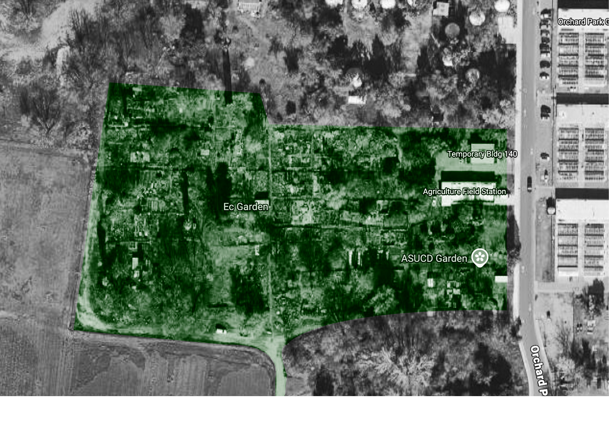

explore
brainstorms, sketches, LOTS of ideation meetings with the founding team.

The Campus Center for the Environment's largest project is their multiacreage garden. Spanning 5 acres, families, students, and members of Davis' community utilize the space to grow their own fresh produce.
IP is constantly growing. Even as I started the site, there was new services they were offering and new testimonials from big clients. I had to find a way to ensure the website kept up with their growth
I needed to implement some sort of Content Management System so that new information could be added within minutes.
brainstorms, sketches, LOTS of ideation meetings with the founding team.
creating a large scope to mess around with, scoping down as I go.
Getting intial approval and building out the website.
iteration and getting multiple points of feedback is key in the final stretch
The final system established a consistent relationship between typography, color, imagery, layout, and information hierarchy.
The final design used a modular design style and detailed IP's services, team, client work, and service offerings. Most importantly all of this was designed in scale, meaning that updates to all pages take zero code.

As my first major client project, I kept having to fight my own learning curve and try new things with minimal oversight. Oftentimes I warred over doing one more revision even if the site, at its core, fulfilled the needs of the user: understanding who IP is.